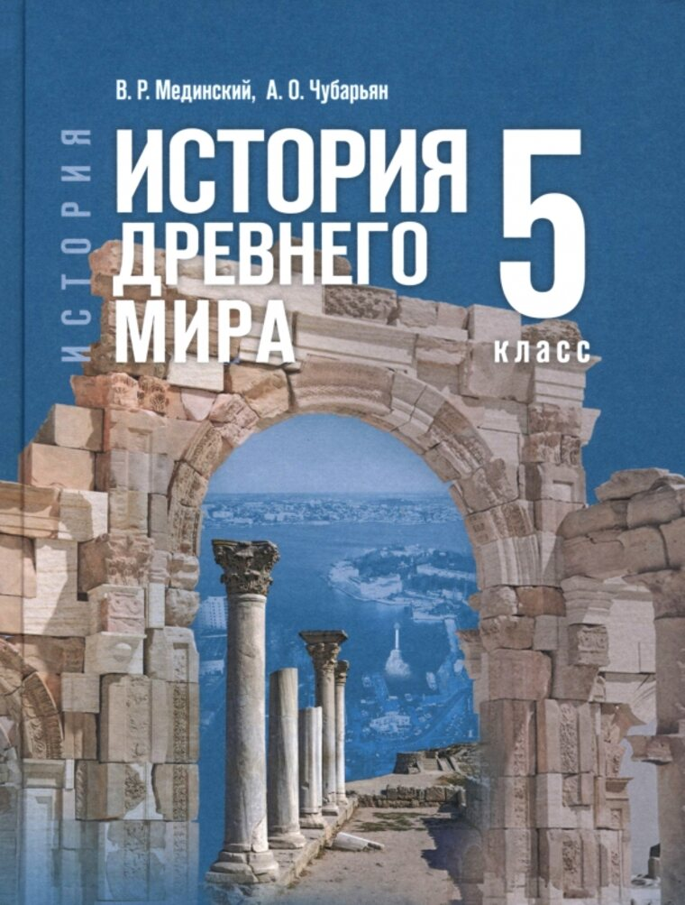

5 класс
›
История
История Древнего мира. 5 класс

История Древнего мира. 5 класс
Мединский В. Р., Чубарьян А. О. · Просвещение, 2026
Гончаров · лекции по курсу истории за пятый класс
История Древнего мира · 10 уроков
Древний Восток · 5
Античность · 5
Смотреть
20 мин
Древний Египет
15 мин
Завоевания фараонов
24 мин
Древнее Междуречье
19 мин
Древняя Индия
21 мин
Поднебесная империя Цинь
24 мин
Спарта
24 мин
Олимпийские игры в Древней Греции
29 мин
Походы Александра Македонского
24 мин
Восстание Спартака
26 мин
Гай Юлий Цезарь
Видеоуроки
История Древнего мира. 5 класс
Кино и документалистика
Древний мир на экране
ВПР и сборники
Варианты и задания, PDF
Тренажёры и игры
Проверить себя